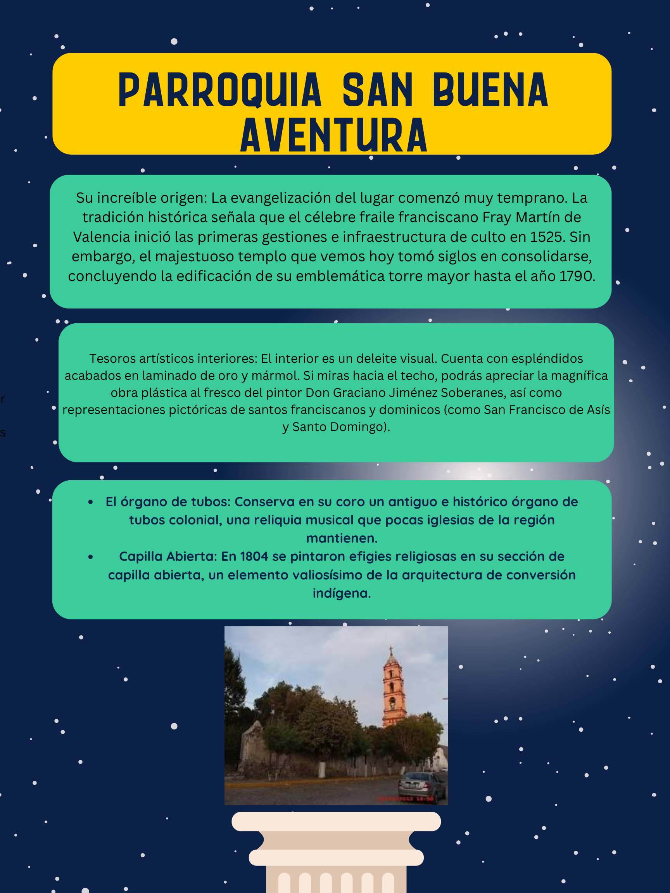
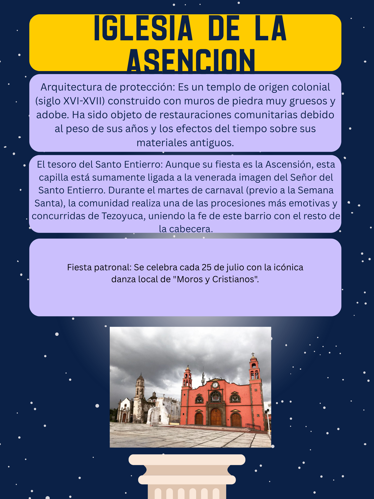
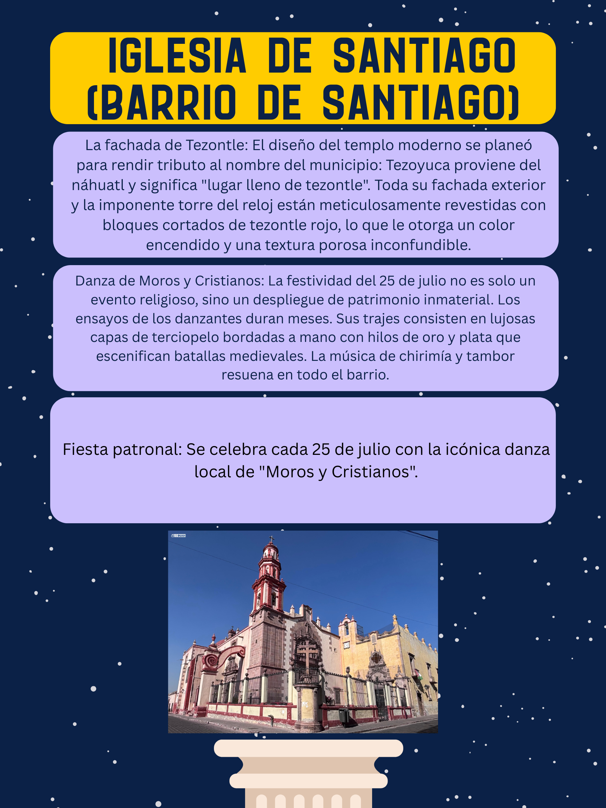
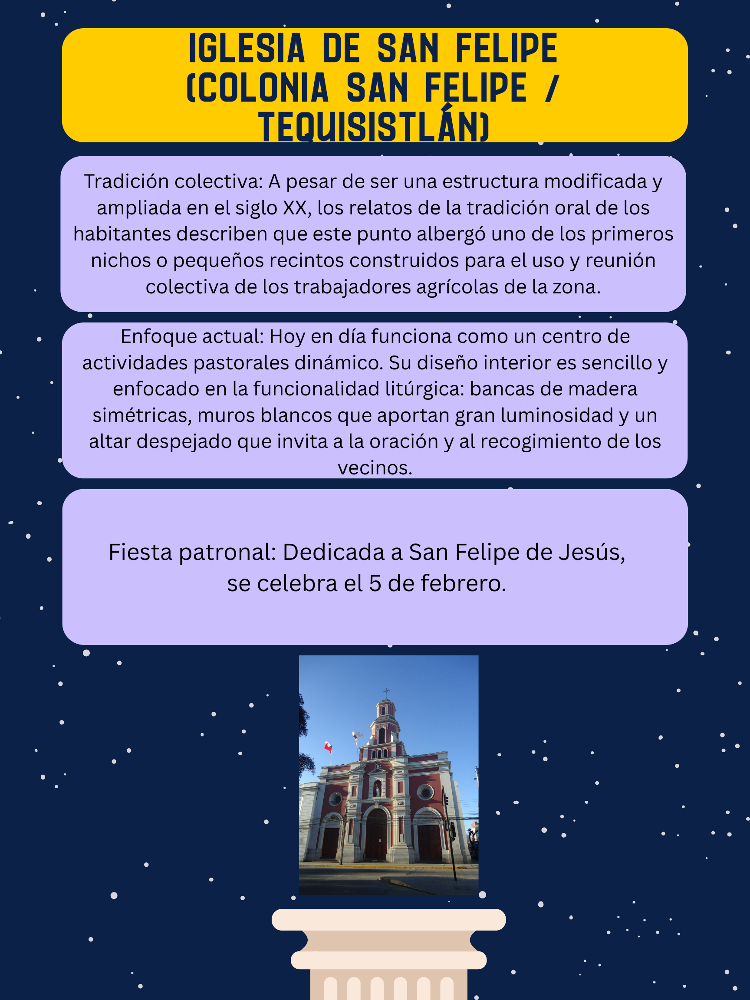
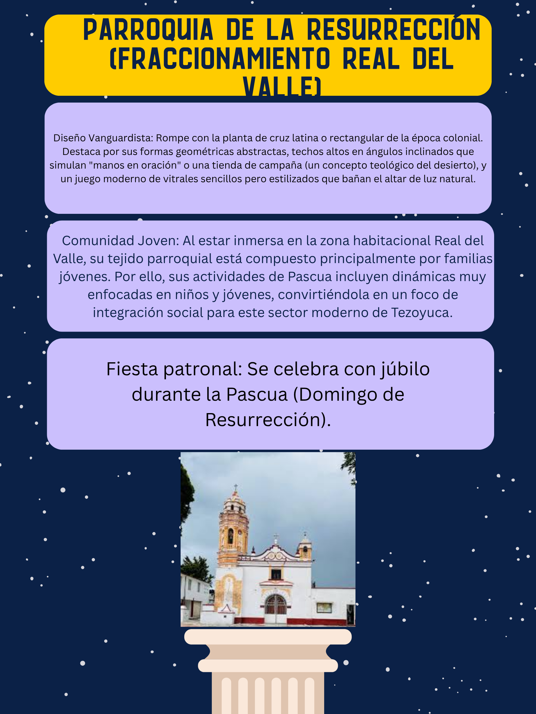

Historia, arte colonial y tradiciones religiosas que forman parte importante del patrimonio cultural de Tezoyuca.

Templo colonial reconocido por su arquitectura y celebraciones tradicionales de la comunidad.

Destaca por su fachada de tezontle y la tradicional danza de Moros y Cristianos.

Espacio religioso moderno con gran importancia social y cultural dentro de la colonia.

Comunidad juvenil y arquitectura contemporánea enfocada en la integración social y religiosa. Haz clic aquí para ver el video